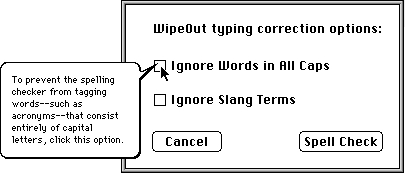

Providing Help Balloons for Items in Dialog Boxes and Alert Boxes
For dialog boxes and alert boxes defined with item list ('DITL') resources, you can provide help balloons for individual items in the dialog box or alert box by supplying a resource of type'hdlg'(dialog-item help). When an item has a help balloon associated with it, the Help Manager automatically displays and removes the help balloon as the user moves the cursor into and out of the item's display rectangle. The Help Manager can display different help balloons for various states of an item--by highlight value if the item is a control, and by enabled and disabled states for items that are not controls.You can also provide help balloons for other areas of a dialog box or alert box using the
- Note
- BalloonWriter, available from APDA, gives nonprogrammers an easy, intuitive way to create help balloons for dialog and alert boxes. BalloonWriter creates
'hdlg'resources as appropriate and places them in the resource file of your application; BalloonWriter likewise creates and stores'STR ','STR#', and'TEXT'resources that contain the help messages authored by nonprogramming writers.'hwin'(window help) resource as described in "Providing Help Balloons for Static Windows" on page 3-60.To create help balloons for items in dialog boxes or alert boxes, create an
'hdlg'resource that corresponds to an item list resource. You associate the information defined in the'hdlg'resource to the alert or dialog box in one of three ways:The
- by adding an item of type
HelpItemto the item list resource- by supplying a resource of type
'hwin'- by calling the
HMScanTemplateItemsfunction from your application'hdlg'resource specifies the tip, the alternate rectangle, and help messages for items in a dialog box or alert box. The item list resource describes the items, and, if it includes an item of typeHelpItem, it can contain the resource ID of a corresponding'hdlg'resource. The Help Manager uses the display rectangles defined in the item list resource as the hot rectangles for the items. The Help Manager uses the alternate rectangles specified in the'hdlg'resource for transposing help balloons' tips when trying to fit the balloons onscreen.For those items designated in the
'hdlg'resource, the Help Manager automatically tracks the cursor and displays help balloons when the following conditions are met: the dialog or alert box has an item of typeHelpItemin its item list resource; your application calls the Dialog Manager routineModalDialog,IsDialogEvent,NoteAlert,StopAlert,CautionAlert, orAlert; and help is enabled.If the cursor passes over any active windows, including dialog or alert boxes, the Help Manager searches the current resource file for resources of type
'hwin'(described in "Providing Help Balloons for Static Windows" on page 3-60). The Help Manager attempts to match either the title of the window or thewindowKindvalue in its window record with the title orwindowKindvalue specified in an'hwin'resource. The matched'hwin'resource, in turn, specifies the resource ID of an'hdlg'or'hrct'(rectangle help) resource that contains the relevant help message. (The'hrct'resource is described in "Providing Help Balloons for Static Windows" on page 3-60.) As described in "Providing Help Balloons for Window Content" on page 3-59, the'hwin'resource can provide help for various other interface features across the entire window as well as for items in a dialog box or an alert box.If you prefer, you can track and display help balloons for modal dialog boxes and alert boxes yourself by using an event-filter function and calling the
HMScanTemplateItemsfunction. UsingHMScanTemplateItemsrequires you to modify your code. For further information onHMScanTemplateItems, see "Setting and Getting Information for Help Resources" beginning on page 3-106.As shown here, a Rez input file for an
'hdlg'resource contains a header component, a missing-items component, and dialog-item components.As described in greater detail later, the way the Help Manager interprets many of the elements depends on whether the item it describes is a control, such as a checkbox or radio button, or something else, such as static text or an icon.
Specifying Header Information for the 'hdlg' Resource
Use the header component to specify the Help Manager version number, the starting index, options, the balloon definition function, and the variation code. As in the other help resources, specify theHelpMgrVersionconstant for the first element of the header component of the'hdlg'resource.You use the second element to associate the help messages beginning at any item number and then continuing sequentially through the item list (
'DITL') resource. To derive an item number to start from, the Help Manager adds the index number you specify for this element to the number of the first item in the item list resource. Thus, index number 0 starts with the item number 1 in the item list resource (because 0 plus 1 equals 1). For example, to describe help messages for only the fifth through seventh items, specify 4 as the starting index in the header component and, because 4 plus 1 equals 5, provide help messages that start with the fifth and proceed through the sixth and seventh items.For the options element, specify a constant (normally,
hmDefaultOptions) or the sum of several constants' values from this list. (These options are described in "Specifying Options in Help Resources" beginning on page 3-22.)CONST hmDefaultOptions = 0; {use defaults} hmUseSubID = 1; {use subrange resource IDs } { for owned resources} hmAbsoluteCoords = 2; {ignore coords of window } { origin and treat upper-left } { corner of window as 0,0} hmSaveBitsNoWindow = 4; {don't create window; save } { bits; no update event} hmSaveBitsWindow = 8; {save bits behind window } { and generate update event}Specify the balloon definition function and variation code (both typically 0) in the fourth and fifth elements of the header component. (These are described in detail in "Specifying Header Information for the 'hmnu' Resource" beginning on page 3-29.)Specifying Missing-Item Information
Following the header component, you can specify the help message for items that are missing from the'hdlg'resource or that are present but have no help messages defined for a particular state. (The function of the missing-items component of the'hdlg'resource is similar to that of the missing-items component of the'hmnu'resource. For details, see "Specifying Help for Menu Items Missing From the Resource" beginning on page 3-29.)In the missing-items component, use the first element to specify a set of tip coordinates and use the second element to specify an alternate rectangle. Both specifications apply to the help messages specified in the other elements of this component.
The tip's coordinates are always relative to the item's position in the dialog box. If you specify the point (0,0) as a default tip, then it is placed 10 pixels from the right and 10 pixels from the bottom of the item's rectangle (as specified in the item list resource) for all missing items. To move the missing item's tip relative to this default location, you can specify positive or negative integers in place of the coordinates (0,0).
If you want an alternate rectangle that is either larger or smaller than a display rectangle, use the missing item's alternate rectangle to specify offsets that apply to the display rectangles for all items in the dialog box. (Remember that the alternate rectangle is used by the Help Manager for transposing the tip if a help balloon does not fit onscreen.) The Help Manager adds the top, left, bottom, and right offsets to the coordinates of an item's display rectangle. For example, if you specify (0,0,0,0) as the missing item's alternate rectangle offsets, the Help Manager uses the display rectangles as alternate rectangles for all missing items. You can specify positive or negative integers for these offsets to move an alternate rectangle's coordinates relative to a display rectangle's coordinates.
Use the third element of the missing-items component to supply one of these identifiers:
HMStringItem,HMSTRResItem,HMStringResItem,HMPictItem,HMTEResItem, orHMSkipItem, described in "Specifying the Format for Help Messages" on page 3-21. In the remaining four elements of this component, supply the help messages for items
in the item list resource that do not otherwise have help messages specified in this'hdlg'resource. You can supply either text strings for the help messages or the resource IDs of resources that contain the help messages.When displaying help balloons for a control, the Help Manager examines the highlight value in the
contrlHilitefield of the control record. An active control that is not selected by the user has a highlight value of 0. Specify a help message for all missing highlighted controls in the fourth element of the missing-items component of the'hdlg'resource.An inactive--that is, dimmed--control has a highlight value of 255. Specify a help message for all missing dimmed controls in the fifth element of the missing-items component.
When, as with checkboxes and radio buttons, the user turns on an on-and-off control,
- Note
- Don't confuse a disabled item with an inactive control. When you don't want the Control Manager to display visual responses to mouse events in a control, you make it inactive by using the Control Manager procedure
HiliteControl. When you don't want the Dialog Manager to report events involving an item in a dialog box, you mark itdisabledin the item list resource. The Dialog Manager makes no visual distinction between disabled and enabled items. See the chapters "Control Manager" and "Dialog Manager" in Inside Macintosh: Macintosh Toolbox Essentials for more information.
the control has a highlight value of 1. Specify a help message for all missing, active, "on" controls in the sixth element of the missing-items component.In addition to the values 0, 1, and 255, multipart controls--such as scroll bars--can also take highlight values between 2 and 253, signifying the part code for the part of the control that has been selected by the user. However, you can specify only one message for all possible highlight values that a control might have other than 0, 1, and 255. You can use the seventh element of the missing-items component to specify this message for missing controls.
The following section offers guidelines about what sorts of messages to provide for different types of controls according to their states. For more detailed information about controls, see the chapter "Control Manager" in Inside Macintosh: Macintosh Toolbox Essentials.
When displaying help for items that are not controls, the Help Manager examines only whether the item is enabled or disabled, as specified in the item list resource. For an enabled item (other than a control), you specify a help message in the fourth element of its component in the
'hdlg'resource. In the fifth element, you specify the help message for the item when it is disabled. The sixth and seventh elements apply only to controls. You should supply these elements with either empty strings or resource IDs of 0, depending on the format indicated by the identifier you specified in the third element of the component.Specifying Help for Items in an Alert or Dialog Box
After the missing-items component, create dialog-item components that specify help messages for the individual items. The first dialog-item component must relate to the item number indexed in the header component; list the remaining dialog-item components in the same order in which they appear in the item list resource. (See the chapter "Dialog Manager" in Inside Macintosh: Macintosh Toolbox Essentials for information on the item list resource.)Use the first element of a dialog-item component to specify the coordinates of the help balloon's tip for that item. Use coordinates local to the item's display rectangle (which is specified in the item list resource) to specify the tip. You can specify (0,0) to place the tip 10 pixels from the right and 10 pixels from the bottom of the item's display rectangle.
Use the second element of a dialog-item component to specify an alternate rectangle for the item. Note that you cannot specify hot rectangles--only alternate rectangles--in an
'hdlg'resource. This is because the Help Manager uses the display rectangles specified in the item list resource as the hot rectangles for help balloons. (If you must specify hot rectangles that are different from the items' rectangles, use the'hrct'resource as described in "Specifying Help for Rectangles in Windows" on page 3-62.) You can, however, specify alternate rectangles in'hdlg'resources that are different from the display rectangles defined in the item list resource. Alternate rectangles give you additional flexibility in positioning your help balloons onscreen. If you make your alternate rectangle smaller than the display rectangle, for example, you have greater assurance that the Help Manager will be able to fit the help balloon onscreen; if you specify an alternate rectangle that is larger than the display rectangle, you have greater assurance that the help balloon will not obscure some important portion within the display rectangle.Specify offsets from the item's display rectangle if you want an alternate rectangle that is different from the display rectangle. The Help Manager adds the top, left, bottom, and right offsets that you specify to the coordinates of the item's display rectangle. For example, if you specify (0,0,0,0) as the alternate rectangle's offsets, the Help Manager uses the item's display rectangle as its alternate rectangle. You can specify positive or negative integers for these offsets to move the alternate rectangle's coordinates relative to the display rectangle's coordinates.
Use the third element of a dialog-item component to supply one of these identifiers:
HMStringItem,HMSTRResItem,HMStringResItem,HMPictItem,HMTEResItem, orHMSkipItem, described in "Specifying the Format for Help Messages" on page 3-21. Note that in any one dialog-item component in the resource, you can specify only one format for all help messages.The remaining elements in a dialog-item component specify help messages for the related item. As previously described in "Specifying Missing-Item Information" on page 3-50, the Help Manager uses these elements differently according to whether the item is or is not a control. For elements four through seven in a dialog-item component, supply either text strings for the help messages or the resource IDs of resources that contain the help messages.
You do not have to provide a help message for every state of an item. If you do not provide a help message for a particular state, the Help Manager uses the help message specified in the missing-items component. If the missing-items component does not specify a help message for that state, then the Help Manager does not display a help balloon for that state of that item.
In your help balloons for buttons, use the construction "To [perform action], click this button." For example, the help message for the OK button in a Spell Check dialog box should state something similar to "To check the spelling of this document with the options you've chosen, click this button."
For an unselected radio button or checkbox, use the fourth element of the corresponding dialog-item component to describe what happens when the user selects the button or checkbox. For example, an unselected radio button titled "Left" might have a help balloon that states, "To align all text along the left margin of the document, click this button."
For a selected radio button (that is, one that is "on"), use the sixth element of the corresponding dialog-item component to describe what the selected button does, beginning with a verb. At the end of the message, state that the button is selected. For example, a selected radio button titled "Left" might have a help balloon that states, "Aligns all text along the left margin of the document. This option is selected."
For a selected checkbox (that is, one that is "on"), use the sixth element of the corresponding dialog-item component to describe what the selected checkbox does, then describe how to turn off the option. For example, a selected checkbox titled "On Line" might have a help balloon that states, "Your Macintosh is connected to a remote computer. To disconnect, click this box."
For a radio button or a checkbox that is dimmed, use the fifth element of the corresponding dialog-item component to describe what it does when it is selected. Use a sentence fragment that begins with a verb. Then explain why the radio button or checkbox is not available. For example, a dimmed radio button titled "Left" might have a help balloon that states, "Aligns all text along the left margin of a document. Not available because no documents are open."
For an editable text item in a dialog box, use the word "here" in your help message
to describe the item. Explain what type of information the user should enter, but don't describe standard Macintosh editing procedures. For example, an editable text item identified by static text reading "Name" might have a help balloon that states, "Type your name here." Since an editable text item is typically disabled, you'll use the fifth element of that item's component to specify a help balloon.Since users typically don't interact with your static text items, you generally shouldn't provide them with help balloons.
You can use the
HMSkipItemidentifier for an item for which you do not want to provide help. If you specifyHMSkipItem, the Help Manager does not display help balloons for that item, even if the missing-items component specifies a help message.In most cases, you should try to describe only the item the balloon is pointing to. It may be tempting to discuss the relationships among items, but this much information can become complex and difficult to read. Remember that the user can point at other items to find out what they are. For example, a button titled "Print" might have a help balloon that states, "To print the document with the options you've chosen, click this button." Do not complicate the message with information like "To print the number of copies of the document that you've selected to the left, using the printer named at the top of this dialog box," and so on.
Listing 3-8 shows a sample dialog-item help resource along with its associated item list and string list resources.
Listing 3-8 Rez input for an item list resource and an
'hdlg'resourceresource 'DITL' (145, "Spelling options", purgeable) { { {124, 194, 144, 254}, Button { enabled, "OK" }, {48, 23, 67, 202}, CheckBox { enabled, "Ignore Words in All Caps" }, {83, 23, 101, 196}, CheckBox { enabled, "Ignore Slang Terms" }, {13, 23, 33, 254}, StaticText { disabled, "WipeOut typing correction options:" }, /*item for Cancel button goes here*/ {0,0,0,0}, /*for help balloon: scan 'hdlg' with */ /* res ID 145*/ HelpItem { disabled, HMScanhdlg /*scan resource type 'hdlg'*/ {145} /*get the resource with ID 145*/ } } }; resource 'hdlg' (145, "Spell options help", purgeable) { /*header component*/ HelpMgrVersion, /*version of Help Manager*/ 0, /*start help with first item in 'DITL'*/ hmDefaultOptions, /*options*/ 0, /*balloon definition ID*/ 3, /*variation code: hang left of items*/ /*missing-items component*/ HMSkipItem { /*no missing-items help messages*/ }, { /*help messages for items*/ /*first dialog-item component: OK button*/ HMStringResItem { /*store help messages in 'STR#' 145*/ {10, 10}, /*place tip inside left edge of button*/ {0,0,0,0}, /*default alternate rectangle: use */ /* display rectangle*/ 145, 1, /*enabled OK button*/ 0, 0, /*OK button is never dimmed*/ 0, 0, /*no enabled-and-checked state for */ /* button*/ 0, 0 /*no other marked states for button*/ }, /*second dialog-item component: All Caps checkbox*/ HMStringResItem { /*store help messages in 'STR#' 145*/ {6, 6}, /*place tip in checkbox*/ {0,0,0,0}, /*default alternate rectangle: use */ /* display rectangle*/ 145, 2, /*highlighted state of checkbox*/ 145, 3, /*dimmed state of checkbox*/ 145, 4, /*checkbox is checked*/ 0, 0 /*not applicable to this control*/ }, /*third dialog-item component: Slang Terms checkbox*/ HMStringResItem { /*store help messages in 'STR#' 145*/ {6, 6}, /*place tip in checkbox*/ {0,0,0,0}, /*default alternate rectangle: use */ /* display rectangle*/ 145, 5, /*highlighted state of checkbox*/ 145, 6, /*dimmed state of checkbox*/ 145, 7, /*checkbox is checked*/ 0, 0 /*not applicable to this control*/ } /*dialog-item component for Cancel button goes here*/ } }; resource 'STR#' (145, "Spell options help text") { { /*[1]*/ "To check the spelling of this document with the " "options you've chosen, click this button."; /*[2]*/ "To prevent the spelling checker from tagging " "words--such as acronyms--that consist entirely " "of capital letters, click this option."; /*[3]*/ "Prevents the spelling checker from tagging " "words--such as acronyms--that consist entirely " "of capital letters. Not available until "; "you install the main dictionary."; /*[4]*/ "The spelling checker is not tagging " "words--such as acronyms--that consist entirely " "of capital letters. Click here to make the "; "spelling checker tag such words."; /*[5]*/ "To prevent the spelling checker from tagging words " "considered to be slang, click this option."; /*[6]*/ "Prevents the spelling checker from tagging " "words considered to be slang. " "Not available until you install the slang dictionary."; /*[7]*/ "The spelling checker is not tagging " "words considered to be slang. " "Click here to make the spelling checker tag such words."; /*help strings for Cancel button go here*/ } };The'hdlg'resource in Listing 3-8 specifies help messages for the first three items in the item list resource. Figure 3-17 shows the Help Manager displaying a help balloon for the second item.Figure 3-17 A help balloon in a modal dialog box

Adding a Help Item to an Item List Resource
In Listing 3-8 on page 3-55, an item of typeHelpItemis included in the item list ('DITL') resource. This item isn't visible to the user; it's provided so that the Help Manager can find the'hdlg'or'hrct'resource in which you've specified the help messages for your dialog box or alert box.When creating a help item in an item list resource, specify an empty rectangle--that is, one with coordinates (0,0,0,0)--for the item's display rectangle. Specify
HelpItemfor the item's type, and specifydisabledfor the item's state. Then, specify one of these three identifiers:
Identifier Purpose HMScanhdlg For the items in an item list resource, the Help Manager displays the help messages specified in an 'hdlg'resource.HMScanAppendhdlg For the items in one item list resource that are appended to those in another item list resource, the Help Manager displays help messages specified in an 'hdlg'resource.HMScanhrct For rectangular areas in the dialog box or alert box, the Help Manager displays help messages specified in an 'hrct'resource.If you specify help messages for your dialog box or alert box in an
'hdlg'resource, use either theHMScanhdlgor theHMScanAppendhdlgidentifier. Use theHMScanAppendhdlgidentifier, however, only when you use the Dialog Manager procedureAppendDITLto append the item list resource to another item list resource. TheAppendDITLprocedure is useful, for example, when adding your own items to the standard file dialog box or print dialog box. When you use theAppendDITLprocedure to add items to an existing dialog box or alert box, theHMScanAppendhdlgidentifier allows you to provide help balloons for the new items in addition to those balloons already provided for the dialog box or alert box. See the chapter "Dialog Manager" in Inside Macintosh: Macintosh Toolbox Essentials for more information on theAppendDITLprocedure.As described in "Specifying Help for Rectangles in Windows" on page 3-62, you can also use the
'hrct'resource to specify help balloons for areas of your dialog box or alert box. If you specify help messages for a dialog box or alert box in an'hrct'resource, you can use theHMScanhrctidentifier in the help item of the box's item list resource.Conclude a help item by specifying the resource ID of the
'hdlg'or'hrct'resource that provides the help messages for the dialog box or alert box.Using a Help Item Versus Using an 'hwin' Resource
Adding an item of typeHelpItemto an item list resource is the simplest method of associating the help balloons defined in your'hdlg'(or'hrct') resource with the item list resource. A slightly more involved method requires you to create an'hwin'(window help) resource. The advantages and disadvantages of the two methods are listed here.The advantages of adding an item for help to the item list resource are that
The disadvantage of adding an item for help to the item list resource is that it allows you to associate help balloons only with items listed in the item list resource.
- it's simple (you have to create only one resource, the
'hdlg'or'hrct'resource)- it works for dialog boxes or alert boxes that have no titles and for those whose
windowKindvalues do not adequately differentiate them from other windows
(thewindowKindfield of window records is described in the chapter "Window Manager" in Inside Macintosh: Macintosh Toolbox Essentials)The advantages of using
'hwin'(window help) resources are thatThe disadvantages of using
- you can provide a single help balloon for a group of related items (rather than having separate help balloons for all the items)
- you can provide help balloons for areas instead of items inside the dialog box or alert box
'hwin'resources are thatUsing the
- it's slightly more complex, because you must create an
'hwin'resource in addition to either an'hdlg'or an'hrct'resource- it works only for dialog boxes and alert boxes that have titles or
windowKindvalues that differentiate them from other windows in your application'hwin'resource requires treating the dialog box or alert box as a static window. When the cursor passes over an active window, the Help Manager attempts to match either the title of the window or thewindowKindvalue (from its window record) with a title orwindowKindvalue you specify in an'hwin'resource. "Associating Help Resources With Static Windows" beginning on page 3-63 describes how to use
'hwin'resources for dialog boxes, alert boxes, and other kinds of static windows you may wish to define.